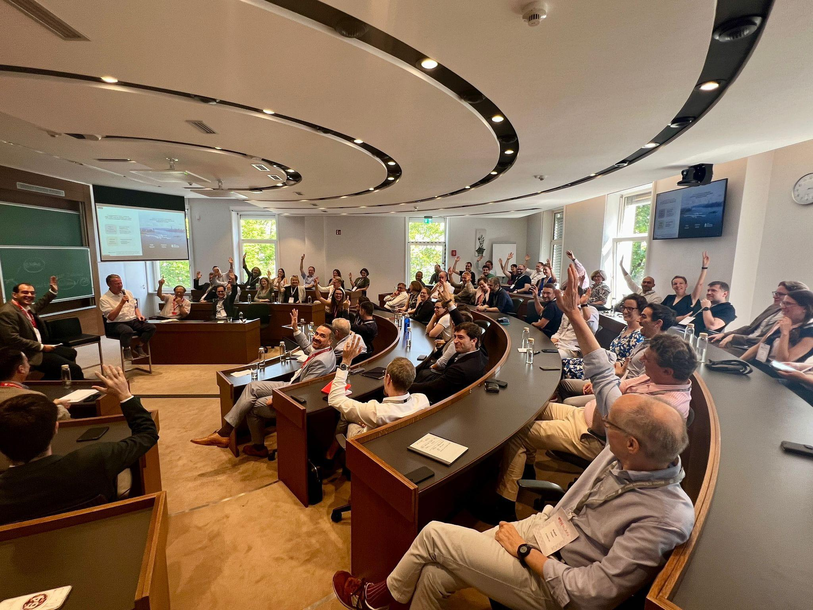
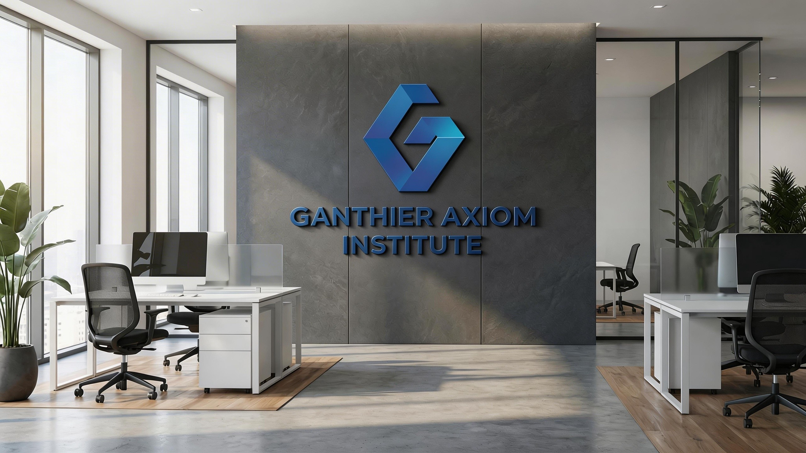

Premium academy presentation
Ganthier Academy uses a premium institutional design language that feels polished without becoming cold. The layout highlights academic confidence, organized information, and an inviting learning atmosphere.
Ganthier Academy is designed as a premium academic platform for learners, educators, families, and knowledge-focused communities that value structured education, clear intellectual development, and future-facing academic confidence. Through bright academy-inspired visuals, organized learning narratives, and a research-aware approach to communication, Ganthier Academy presents education as both a disciplined process and a lifelong source of growth.

Ganthier Academy combines an academy-style visual system with thoughtful educational language, giving the website a polished and credible institutional presence.
The home page of Ganthier Academy introduces the institution with a calm, confident, and professional voice. It uses a bright academic palette, balanced sections, refined cards, and campus-style imagery to create a trustworthy learning environment from the first screen.
Ganthier Academy uses a premium institutional design language that feels polished without becoming cold. The layout highlights academic confidence, organized information, and an inviting learning atmosphere.
Every section helps visitors understand what Ganthier Academy represents: careful learning design, thoughtful communication, and a strong sense of intellectual progression.
Ganthier Academy presents education as a global conversation, connecting academic discipline with cultural awareness, student adaptability, and long-term knowledge development.
Ganthier Academy is positioned around the idea that education should not only deliver facts, but also help learners build stronger judgment, better questions, clearer communication, and the confidence to connect knowledge across disciplines.
Ganthier Academy emphasizes order, clarity, and step-by-step thinking so learners can engage complex ideas with greater confidence.
The website communicates in a thoughtful academic tone, making Ganthier Academy suitable for institutional presentation, student guidance, and educational insight.
The visual direction balances blue academic trust, gold scholarly detail, and white space to create a distinctive Ganthier Academy identity.

A strong academic identity is not built on decoration alone. Ganthier Academy presents a learning framework that values foundational understanding, disciplined curiosity, guided practice, and reflective growth.
Ganthier Academy begins with clear foundations so learners understand key ideas before advanced interpretation.
Learners are encouraged to ask stronger questions, compare viewpoints, and explore academic themes with intellectual honesty.
Academic development improves through repeated practice, meaningful reading, and communication that turns knowledge into usable skill.
Ganthier Academy highlights reflection as a key part of learning because students grow by reviewing progress and recognizing patterns.
Because your images have different proportions, Ganthier Academy uses flexible visual blocks, tall image cards, medium campus frames, and article-style panels.

The Insights section is designed as a complete blog system with five long-form articles. Each article title includes Ganthier Academy and explores a different educational theme.

A detailed article exploring why strong academic foundations shape better thinking and confident progress.
Read Article →
A discussion about global education, adaptable thinking, and a wider academic worldview.
Read Article →
A practical essay about learning habits, reflective study, and sustained progress.
Read Article →
An article describing how confidence grows through clarity, feedback, and practice.
Read Article →Visit the About page to understand the academy identity, explore Insights for long-form articles, or contact Ganthier Academy directly through official channels.